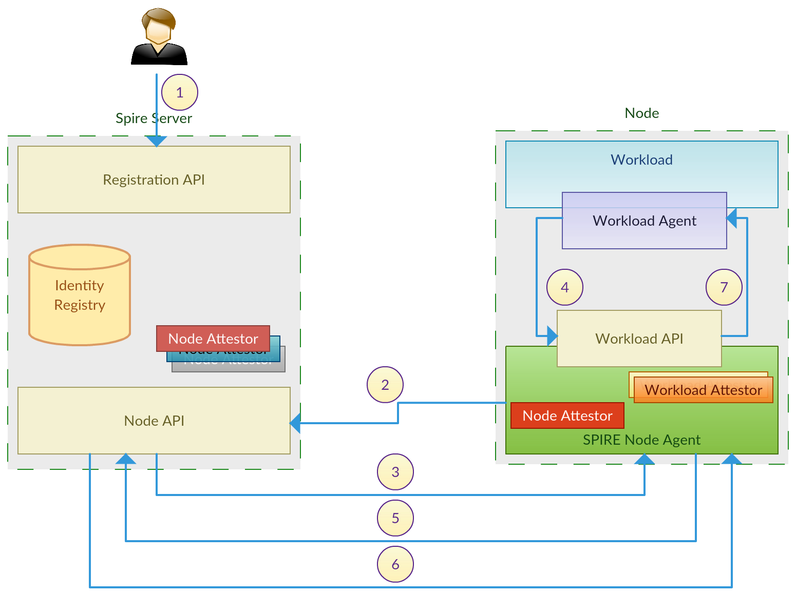

Spire
Narayanaperumal Gurusamy
ngurusam@akamai.comThe SPIFFE project
github.com/spiffe/spiffe
A set of specifications that cover how a workload should retrieve and use it's identity.
- SPIFFE ID
- SPIFFE Verifable Identity Documents (SVIDs)
- The SPIFFE Workload API
Spire
github.com/spiffe/spire
SPIRE, the SPIFFE Runtime Environment, is an extensible system that implements the principles embodied in the SPIFFE standards. SPIRE manages platform and workload attestation, provides an API for controlling attestation policies, and coordinates certificate issuance and rotation.
Apache 2.0 license. Independent governance. Highly extensible through plugins.
SPIFFE ID
spiffe://eaa.akamai.com/mpop/api
SPIFFE Verifiable Identity Document
spiffe://eaa.akamai.com/mpop/api
Typically short-lived(15m)
SPIRE Components
Server
- Identity Registry — SPIRE server has an own identity registry which keeps two coarse-grained attributes that decides how the SPIFFE IDs will be issued to a workload.
Agent
- Node Selector — This defines a machine (physical or virtual) where a workload can be running on. The exact type of selector to be used is decided based on the infrastructure provider (AWS, GCP, bare metal) that the workload is running. Eg. AWS EC2 Instance ID, a serial number of a physical machine. Node attestor act based on the infrastructure provider to honor their selectors.
- Workload Selector — This defines how to identify a process as representing a workload, after the node is identified. This can be described in terms of attributes of the process itself (eg. Linux UID) or in terms of indirect attributes such as a kubernetes namespace. The node agent is responsible to verify that a particular process on a machine qualifies for its workload selector. Workload attestor act based on the process attributes to honor the process selectors.
- SPIRE Node Agent — A process that sits on the node, verifies the provenance of workloads running on the node, and provides those workloads with certificates via the Workload API, based on the selectors.
SPIRE Overview
Node attestation workflow